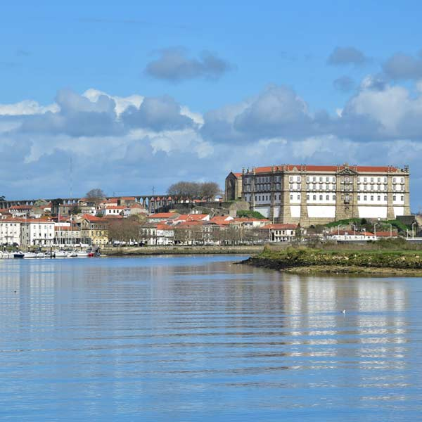

Escolha onde quer passar as suas férias!
Em Portugal voce visita a Ilha do Conde, voce deseja ficar por lá ou explorar outras praias?
No Canada você pode visitar a cidade de Toronto, onde tem vários pontos turísticos para serem conhecidos.
nessa praia você pode se diveritr na areia, passear pelos centrinhos e tomar um banho de mar.
Conhecendo as praias de Portugal, fiquei satisfeita com a viagem,
Me sinto satisfeita com a viagem e me preparo para o retorno das minhas atividades
Gostei tanto da cidade que decido morar ali.
Gostei tanto da praia que decido morar ali.